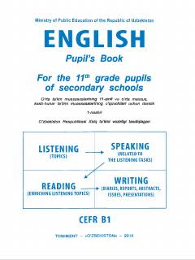

IT11-sinf o'quvchilari uchun mo'ljallangan ingliz tili darsligi.
Mazkur darslik umumiy o'rta ta'lim muassasalarining 11-sinf o'quvchilari uchun mo'ljallangan bo'lib, CEFR B1 darajasiga moslashtirilgan. Kitob tinglab tushunish, gapirish, o'qish va yozish ko'nikmalarini hamda lug'at boyligi va grammatikani interfaol usullar yordamida rivojlantirishga qaratilgan.